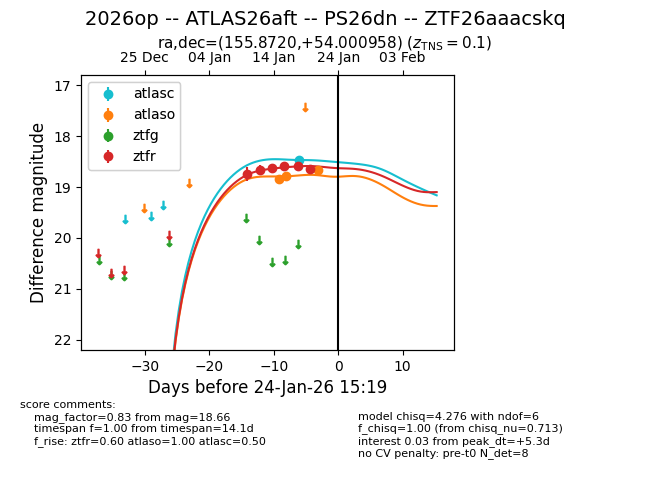
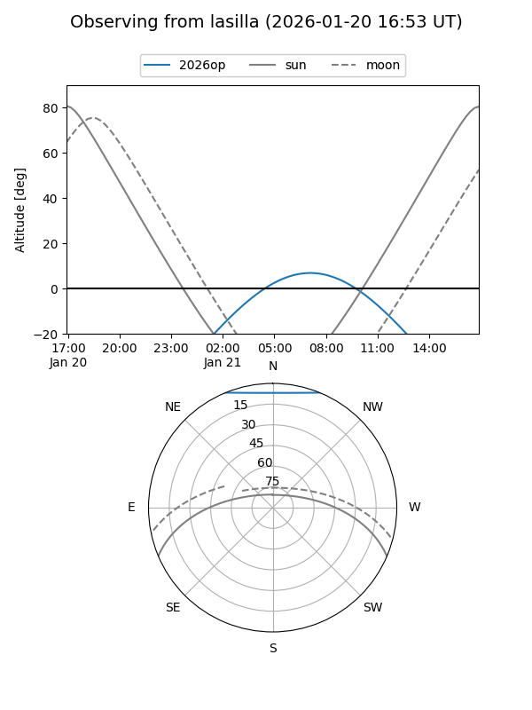
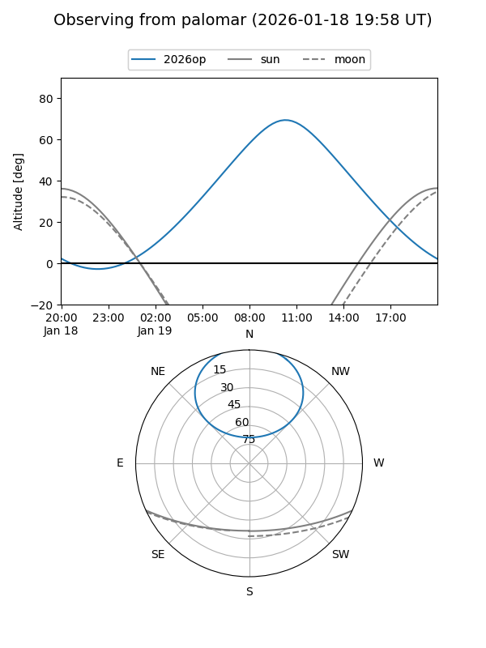
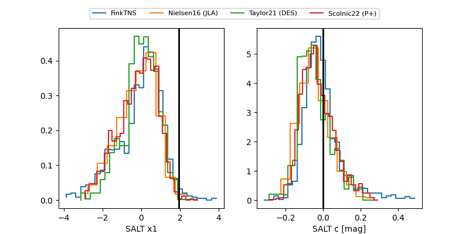

2026op
Target 2026op at 2026-01-26 09:06
Aliases and brokers:
FINK: link
Lasair: link
ALeRCE: link
TNS: link
YSE: link
alt names
ZTF26aaacskq (ztf,fink_ztf)
2026op (tns,yse)
ATLAS26aft (atlas)
PS26dn (panstarrs)
Coordinates:
equatorial (ra, dec) = 155.8720,+54.00096
equatorial (HMS+DMS) = 10:23:29.27,+54:00:03.45
galactic (l, b) = (157.8834,+51.88243)
Flags:
confirmed ia
Photometry:
last atlasc=18.47, atlaso=18.66, ztfr=18.85
1 atlasc, 3 atlaso, 7 ztfr detections
Lightcurve

Visibility


Additional plots
